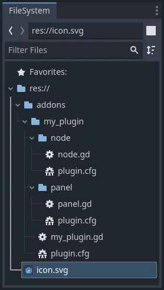

Tạo plugin
Giới thiệu về plugin
Plugin là một cách tuyệt vời để mở rộng trình chỉnh sửa bằng các công cụ hữu ích. Plugin có thể được tạo hoàn toàn bằng GDScript và các scene thông thường, thậm chí không cần tải lại trình chỉnh sửa. Khác với module, bạn không cần viết mã C++ hay biên dịch lại engine. Dù điều này khiến plugin kém mạnh mẽ hơn, bạn vẫn có thể làm rất nhiều thứ với chúng. Lưu ý rằng plugin cũng tương tự như bất kỳ scene nào bạn đã có thể tạo, chỉ khác là nó được tạo bằng script để thêm chức năng cho trình chỉnh sửa.
Bài hướng dẫn này sẽ hướng dẫn bạn tạo hai plugin để bạn hiểu cách chúng hoạt động và có thể tự phát triển plugin của riêng mình. Plugin thứ nhất là một node tùy chỉnh mà bạn có thể thêm vào bất kỳ scene nào trong dự án, còn plugin thứ hai là một dock tùy chỉnh được thêm vào trình chỉnh sửa.
Tạo một plugin
Trước khi bắt đầu, hãy tạo một dự án trống mới ở bất kỳ đâu bạn muốn. Dự án này sẽ làm nền tảng để phát triển và thử nghiệm plugin.
Điều đầu tiên cần làm để trình chỉnh sửa nhận diện một plugin mới là tạo hai tệp: plugin.cfg cho cấu hình và một tool script chứa chức năng. Plugin có đường dẫn chuẩn dạng addons/plugin_name bên trong thư mục dự án. Godot cung cấp một hộp thoại để tạo các tệp đó và đặt chúng vào đúng vị trí.
Trên thanh công cụ chính, nhấn vào menu thả xuống Project. Sau đó nhấn Project Settings.... Vào tab Plugins rồi nhấn nút ở góc trên bên phải.
Bạn sẽ thấy hộp thoại xuất hiện như sau:

Văn bản placeholder trong mỗi trường mô tả cách nó ảnh hưởng đến việc plugin tạo tệp và các giá trị trong tệp cấu hình.
Để tiếp tục ví dụ, hãy dùng các giá trị sau:
Plugin Name: My Custom Node
Subfolder: my_custom_node
Description: A custom node made to extend the Godot Engine.
Author: Your Name Here
Version: 1.0.0
Language: GDScript
Script Name: custom_node.gd
Plugin Name: My Custom Node
Subfolder: MyCustomNode
Description: A custom node made to extend the Godot Engine.
Author: Your Name Here
Version: 1.0.0
Language: C#
Script Name: CustomNode.cs
Cảnh báo
Trong C#, script EditorPlugin cần được biên dịch, điều này đòi hỏi phải build dự án. Sau khi build dự án, plugin có thể được bật trong tab Plugins của Project Settings.
Bạn sẽ có cấu trúc thư mục như sau:

plugin.cfg là một tệp INI chứa metadata về plugin của bạn. Tên và mô tả giúp mọi người hiểu plugin làm gì. Tên của bạn giúp bạn được ghi công đúng cho công sức của mình. Số phiên bản giúp người khác biết họ có đang dùng phiên bản cũ hay không; nếu bạn chưa chắc cách đặt số phiên bản, hãy xem Semantic Versioning. Tệp script chính sẽ chỉ cho Godot biết plugin của bạn làm gì trong trình chỉnh sửa khi được kích hoạt.
Tệp script
Khi tạo plugin, hộp thoại sẽ tự động mở script EditorPlugin cho bạn. Script này có hai yêu cầu mà bạn không thể thay đổi: nó phải là một script @tool, nếu không nó sẽ không tải đúng trong trình chỉnh sửa, và nó phải kế thừa từ class_EditorPlugin.
Cảnh báo
Ngoài script EditorPlugin, mọi GDScript khác mà plugin của bạn sử dụng cũng phải là tool. Bất kỳ GDScript nào không có @tool được trình chỉnh sửa sử dụng sẽ hoạt động như một file rỗng!
Việc xử lý khởi tạo và dọn dẹp resource rất quan trọng. Một thói quen tốt là dùng hàm ảo _enter_tree() để khởi tạo plugin và _exit_tree() để dọn dẹp nó. May mắn là hộp thoại đã tạo sẵn các callback này cho bạn. Script của bạn sẽ trông giống như sau:
@tool
extends EditorPlugin
func _enter_tree():
# Initialization of the plugin goes here.
pass
func _exit_tree():
# Clean-up of the plugin goes here.
pass
#if TOOLS
using Godot;
[Tool]
public partial class CustomNode : EditorPlugin
{
public override void _EnterTree()
{
// Initialization of the plugin goes here.
}
public override void _ExitTree()
{
// Clean-up of the plugin goes here.
}
}
#endif
Đây là một mẫu tốt để dùng khi tạo plugin mới.
Node tùy chỉnh
Đôi khi bạn muốn có một hành vi nhất định ở nhiều node, chẳng hạn một scene hoặc control tùy chỉnh có thể tái sử dụng. Tạo instance hữu ích trong nhiều trường hợp, nhưng đôi khi có thể rườm rà, đặc biệt nếu bạn dùng nó trong nhiều dự án. Một giải pháp tốt là tạo một plugin thêm vào một node có hành vi tùy chỉnh.
Trong bài hướng dẫn này, chúng ta sẽ tạo một nút in ra một thông điệp khi được nhấn. Để làm vậy, chúng ta cần một script kế thừa từ class_Button. Nó cũng có thể kế thừa class_BaseButton nếu bạn muốn:
# Optional, add to execute in the editor.
@tool
# Icons are optional.
# Alternatively, you may use the UID of the icon or the absolute path.
@icon("icon.svg")
# Automatically register the node in the Create New Node dialog
# and make it available for use with other scripts.
class_name MyButton
extends Button
func _enter_tree():
pressed.connect(clicked)
func clicked():
print("You clicked me!")
using Godot;
// Optional, add to execute in the editor.
[Tool]
// Icons are optional.
// Alternatively, you may use the UID of the icon or the absolute path.
[Icon("icon.svg")]
// Automatically register the node in the Create New Node dialog
// and make it available for use with other scripts.
[GlobalClass]
public partial class MyButton : Button
{
public override void _EnterTree()
{
Pressed += Clicked;
}
public void Clicked()
{
GD.Print("You clicked me!");
}
}
Vậy là xong nút cơ bản của chúng ta. Bạn có thể lưu nó thành my_button.gd trong thư mục plugin. Bạn có thể có một biểu tượng 16×16 để hiển thị trong cây scene. Nếu chưa có, bạn có thể lấy biểu tượng mặc định từ engine và lưu vào thư mục addons/my_custom_node với tên icon.svg, hoặc dùng logo Godot mặc định (@icon("res://icon.svg")).
Mẹo
Ảnh SVG dùng làm biểu tượng node tùy chỉnh nên bật các tùy chọn import Editor > Scale With Editor Scale và Editor > Convert Colors With Editor Theme. Điều này cho phép biểu tượng tuân theo cài đặt tỷ lệ và giao diện của trình chỉnh sửa nếu biểu tượng được thiết kế với cùng bảng màu như các biểu tượng của chính Godot.
Sau khi xong, plugin sẽ có sẵn trong danh sách plugin ở Project Settings, vì vậy hãy kích hoạt nó như hướng dẫn trong Checking the results.
Sau đó thử nghiệm bằng cách thêm node mới của bạn:

Khi thêm node, bạn sẽ thấy nó đã được gắn sẵn script bạn tạo. Đặt văn bản cho nút, lưu và chạy scene. Khi nhấn nút, bạn sẽ thấy một đoạn văn bản trong console:

Dock tùy chỉnh
Đôi khi bạn cần mở rộng trình chỉnh sửa và thêm các công cụ luôn sẵn có. Một cách dễ dàng là thêm một dock mới bằng plugin. Dock chỉ là các scene dựa trên Control, nên chúng được tạo theo cách tương tự các scene GUI thông thường.
Việc tạo dock tùy chỉnh được thực hiện giống như node tùy chỉnh. Tạo một file plugin.cfg mới trong thư mục addons/my_custom_dock, rồi thêm nội dung sau vào:
[plugin]
name="My Custom Dock"
description="A custom dock made so I can learn how to make plugins."
author="Your Name Here"
version="1.0"
script="custom_dock.gd"
[plugin]
name="My Custom Dock"
description="A custom dock made so I can learn how to make plugins."
author="Your Name Here"
version="1.0"
script="CustomDock.cs"
Sau đó tạo script custom_dock.gd trong cùng thư mục. Đoạn code sau sẽ giúp bạn bắt đầu.
@tool
extends EditorDock
func _enter_tree():
# Initialization of the dock goes here.
pass
func _exit_tree():
# Clean-up of the dock goes here.
pass
#if TOOLS
using Godot;
[Tool]
public partial class CustomNode : EditorDock
{
public override void _EnterTree()
{
// Initialization of the dock goes here.
}
public override void _ExitTree()
{
// Clean-up of the dock goes here.
}
}
#endif
Vì chúng ta đang muốn thêm một dock tùy chỉnh mới, chúng ta cần tạo nội dung cho dock. Đây chỉ là một scene Godot tiêu chuẩn: chỉ cần tạo một scene mới trong trình chỉnh sửa rồi chỉnh sửa nó.
Với dock của trình chỉnh sửa, node gốc bắt buộc phải là Control hoặc một trong các lớp con của nó. Trong bài hướng dẫn này, bạn có thể tạo một nút duy nhất. Đừng quên thêm văn bản cho nút.

Lưu scene này thành my_dock.tscn. Bây giờ, chúng ta cần lấy scene vừa tạo rồi thêm nó làm dock trong trình chỉnh sửa. Để làm vậy, bạn có thể dùng hàm add_dock() của lớp EditorPlugin.
Bạn cần chọn vị trí dock và xác định control cần thêm (chính là scene bạn vừa tạo). Đừng quên gỡ bỏ dock khi plugin bị vô hiệu hóa. Script có thể trông như sau:
@tool
extends EditorPlugin
# A class member to hold the dock during the plugin life cycle.
var dock
func _enter_tree():
# Initialization of the plugin goes here.
# Load the dock scene and instantiate it.
var dock_scene = preload("res://addons/my_custom_dock/my_dock.tscn").instantiate()
# Create the dock and add the loaded scene to it.
dock = EditorDock.new()
dock.add_child(dock_scene)
dock.title = "My Dock"
# Note that LEFT_UL means the left of the editor, upper-left dock.
dock.default_slot = EditorDock.DOCK_SLOT_LEFT_UL
# Allow the dock to be on the left or right of the editor, and to be made floating.
dock.available_layouts = EditorDock.DOCK_LAYOUT_VERTICAL | EditorDock.DOCK_LAYOUT_FLOATING
add_dock(dock)
func _exit_tree():
# Clean-up of the plugin goes here.
# Remove the dock.
remove_dock(dock)
# Erase the control from the memory.
dock.queue_free()
#if TOOLS
using Godot;
[Tool]
public partial class CustomDock : EditorPlugin
{
private EditorDock _dock;
public override void _EnterTree()
{
var dockScene = GD.Load<PackedScene>("res://addons/MyCustomDock/MyDock.tscn").Instantiate<Control>();
// Create the dock and add the loaded scene to it.
_dock = new EditorDock();
_dock.AddChild(dockScene);
_dock.Title = "My Dock";
// Note that LeftUl means the left of the editor, upper-left dock.
_dock.DefaultSlot = DockSlot.LeftUl;
// Allow the dock to be on the left or right of the editor, and to be made floating.
_dock.AvailableLayouts = DockLayout.Horizontal | DockLayout.Floating;
AddDock(_dock);
}
public override void _ExitTree()
{
// Clean-up of the plugin goes here.
// Remove the dock.
RemoveDock(_dock);
// Erase the control from the memory.
_dock.QueueFree();
}
}
#endif
Lưu ý rằng, dù ban đầu dock sẽ xuất hiện ở vị trí đã chỉ định, người dùng có thể tự do thay đổi vị trí của nó và lưu bố cục kết quả.
Kiểm tra kết quả
Giờ là lúc kiểm tra kết quả công việc của bạn. Mở Project Settings và nhấn vào tab Plugins. Plugin của bạn sẽ là plugin duy nhất trong danh sách.

Bạn có thể thấy plugin chưa được bật. Nhấn vào ô Enable để kích hoạt plugin. Dock sẽ hiện ra ngay cả trước khi bạn đóng cửa sổ cài đặt. Giờ bạn đã có một dock tùy chỉnh:

Đăng ký autoload/singleton trong plugin
Plugin của trình chỉnh sửa có thể tự động đăng ký autoload khi plugin được bật. Điều này cũng bao gồm việc hủy đăng ký autoload khi plugin bị tắt.
Điều này giúp người dùng thiết lập plugin nhanh hơn, vì họ không còn phải tự thêm autoload vào cài đặt dự án nếu plugin của bạn yêu cầu dùng autoload.
Dùng đoạn code sau để đăng ký singleton từ plugin của trình chỉnh sửa:
@tool
extends EditorPlugin
# Replace this value with a PascalCase autoload name, as per the GDScript style guide.
const AUTOLOAD_NAME = "SomeAutoload"
func _enable_plugin():
# The autoload can be a scene or script file.
add_autoload_singleton(AUTOLOAD_NAME, "res://addons/my_addon/some_autoload.tscn")
func _disable_plugin():
remove_autoload_singleton(AUTOLOAD_NAME)
#if TOOLS
using Godot;
[Tool]
public partial class MyEditorPlugin : EditorPlugin
{
// Replace this value with a PascalCase autoload name.
private const string AutoloadName = "SomeAutoload";
public override void _EnablePlugin()
{
// The autoload can be a scene or script file.
AddAutoloadSingleton(AutoloadName, "res://addons/MyAddon/SomeAutoload.tscn");
}
public override void _DisablePlugin()
{
RemoveAutoloadSingleton(AutoloadName);
}
}
#endif
Sử dụng sub-plugin
Thường thì một plugin thêm nhiều thứ, ví dụ một node tùy chỉnh và một panel. Trong những trường hợp đó, có thể sẽ dễ hơn nếu có script plugin riêng cho từng tính năng. Bạn có thể dùng sub-plugin cho việc này.
Trước tiên, tạo tất cả plugin và sub-plugin như các plugin bình thường:

Sau đó di chuyển các sub-plugin vào thư mục plugin chính:

Godot sẽ ẩn các sub-plugin khỏi danh sách plugin để người dùng không thể bật hoặc tắt chúng. Thay vào đó, script plugin chính nên bật và tắt các sub-plugin như sau:
@tool
extends EditorPlugin
# The main plugin is located at res://addons/my_plugin/
const PLUGIN_NAME = "my_plugin"
func _enable_plugin():
EditorInterface.set_plugin_enabled(PLUGIN_NAME + "/node", true)
EditorInterface.set_plugin_enabled(PLUGIN_NAME + "/panel", true)
func _disable_plugin():
EditorInterface.set_plugin_enabled(PLUGIN_NAME + "/node", false)
EditorInterface.set_plugin_enabled(PLUGIN_NAME + "/panel", false)
Đi xa hơn
Giờ bạn đã biết cách tạo plugin cơ bản, bạn có thể mở rộng trình chỉnh sửa theo nhiều cách. Rất nhiều chức năng có thể được thêm vào trình chỉnh sửa bằng GDScript; đây là một cách mạnh mẽ để tạo các trình chỉnh sửa chuyên biệt mà không cần đi sâu vào module C++.
Bạn có thể tự tạo plugin để hỗ trợ chính mình và chia sẻ chúng trên Asset Library để mọi người có thể hưởng lợi từ công sức của bạn.